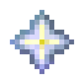

Eye of Arburaz
The artifact sought by Heraldus. The journals describe an object capable of speaking, bargaining and offering power.
Powers attributed to the artifact
The Eye of Arburaz is the sentient artifact sought in Heraldus's expedition. A tome found by Heraldus's scribes attributes supernatural strength, lasting vigor, rejuvenation and even the ability to produce food to it. The king treats these promises as reasons to investigate. His journals distinguish this list of rumors from the properties he reports experiencing.
Form and perception
Heraldus describes a fist-sized crystalline sphere with an iridescent ring resembling an iris. It feels warm and is so heavy that Frederick offers to carry it. On touching it, Heraldus perceives a crystalline enclosure and hears a clear, distinct voice directly in his mind. Ulric, standing beside him, says he merely saw him look at the sphere for a few moments. The Eye's presence is associated with confidence and strength.
The voice and the bargain
The voice introduces itself as the Eye, says that it has been separated from its former master for an eternity, and describes centuries in the darkness of a sealed well as the cause of its weakening. The identity of that master and the artifact's origin remain unresolved. Its persistent desire is to see the sun again; in return, it offers power, knowledge and the possibility of feats beyond imagination.
The account associates previous possession of the Eye with Agraal, who supposedly paid a high price for it. Even after his body's defeat, Agraal's spirit remains a threat to the artifact's new ownership.
The item and its acquisition on the map
Community documentation identifies the object as minecraft:nether_star, with the display name The Eye of Arburaz. Possessing it can trigger end-of-quest dialogue or mechanisms scripted through command blocks.
The final chest is in the underground throne room of the stone structure in the marshes, at −1572, 4, 1382. Acquisition requires overcoming the final defenses, including the manifestation of Agraal's spirit called Agraal’s Vengeance.
Gallery



See also
Sources and references
- v11.4.4 maps, signs, books and items World records
- The Eye of Arburaz · Broville Wiki Community archive
- Journal 1 and Journal 6 I–II — H. World book
Text adapted and expanded from The Eye of Arburaz (contributors and history, revision 5009). Adapted text is available under CC BY-SA 3.0.